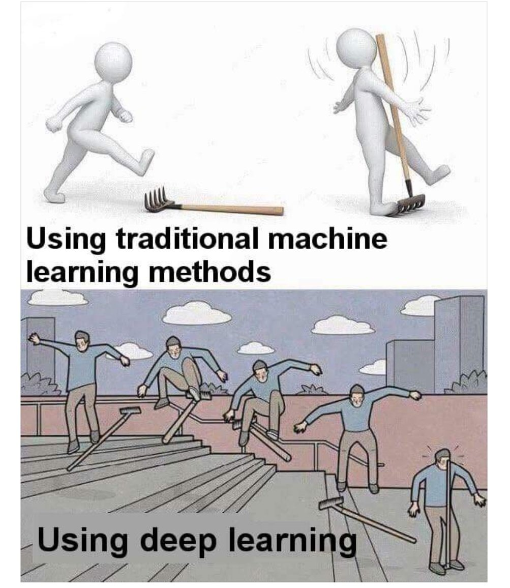
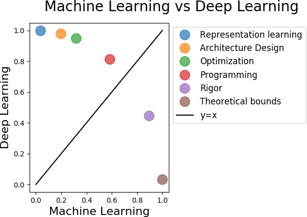

class: center, middle # How to do (deep learning) research? <br/> Research guidelines: http://jvgemert.github.io/links.html <br/> <br/> <br/> [Jan van Gemert](http://jvgemert.github.io/) Computer Vision lab <img src="im/Delft.png" width=200> --- # Machine learning vs Deep learning <center> <p></p> </center> --- <center> <p></p> </center> -- Machine learning: application independent; Deep learning: coupled to the application. --- # What has deep learning ever done for us? -- ### The good - Excellent representations for unmeasurable data (images/text/speech/...) - Available code frameworks (PyTorch, TensorFlow/Keras) - Models, code and pre-trained features often shared -- ### The Bad - Massive data - High compute - May not converge (and unclear why) -- ### The Ugly - Critically sensitive to hyperparameter tuners - Bold number fetishism - Reproducibility difficulty (even with code) --- # Research organization I -- 1. **Take full responsibility**, You are in charge of everything. Your adviser's role is to advise, the final responsibility remains yours. -- 2. **No dependencies on third parties**, Promised datasets, experts, constraints, or other agreements have to be there *before* you start. -- 3. **Meet your adviser**, try to see your adviser at least once every 2 weeks; once per week is better. -- 4. **Focus your adviser**, meeting time is limited. It is your responsibility to choose to discuss what benefits you most. --- # Research organization II -- 5. **Do not take critique personal**, all feedback is meant to improve and benefit you. Do not fight the feedback, even if you think it is wrong: Make a note, and think about why your supervisor gave this feedback. -- 6. **If you disagree, propose something**, It's OK to disagree with a suggestion of your adviser, but if you do: propose something else. -- 7. **Analyze**, when presenting (intermediate) results, give an interpretation and conclusions. -- 8. **Suggest solutions**, when encountering research or organizational problems: suggest a solution. --- # Research process I -- 1. **One main research question**, it may change over time, pursue a single topic: try to write it down. -- 2. **Minimize 3rd party components**, (object detector, pose estimator..) Minimize effort, it should not matter, modular. -- 3. **Validate published work**, Not obvious if published work generalizes to your problem. There may be subtleties: Validate this. -- 4. **Prioritize idea breaking**, Start with the greatest risk. Do not invest only to find out months later that the main idea did not work. -- 5. **Depth-first instead of breadth-first**, No deep sub-topics, do the minimum. First full version ASAP to validate your idea. More baselines/variants/datasets later. --- # Research process II -- 6. **One Experiment answers a single question**, write answer down before the experiment. Validate. -- 7. **Show proof of concept**, start with fully controlled (possibly toy) dataset of 'the simplest case possible' which should only vary in the relevant manner. To validate problem and your solution. -- 8. **Exploratory experiments take max 1 night**, if it takes 1 week: only 24 in 6 months. Minimize experimental time to answer more questions. -- 9. **Change only 1 variable**, if multiple variables change, it is not possible to determine the cause of an effect. -- 10. **Debug your scientific ideas and your code**, Test ideas and test code every time you make a change. Assume you made a mistake somewhere, gather independent proof that it is correct --- # Research mentality -- 1. **The critical reviewer**, explain your research to a devil on your shoulder who wants to reject everything. -- 2. **Your adviser does not have the answer**, By definition, research has not been done before. No list of ToDos: We'll find them together. -- 3. **Be consistent**, Assumptions you make in one part of your research should not suddenly change in another part. -- 4. **Question everything**, Take a step back, and think about what you are really doing. -- 5. **Simple is strong**, simple is more powerful than complex. Explain your topic to your mother, if she doesn't understand: its too complex. -- 6. **Limitations**, showing insight where it fails is strong. The goal of research is understanding. -- 7. **Write early and often**, helps to make thoughts concrete. Writing always takes longer than you think. -- 8. **Not' Eureka' But 'that’s strange'**, (Asimov) is the most exciting phrase in research. It becomes most interesting when expectations break. --- # More? All guidelines: http://jvgemert.github.io/links.html